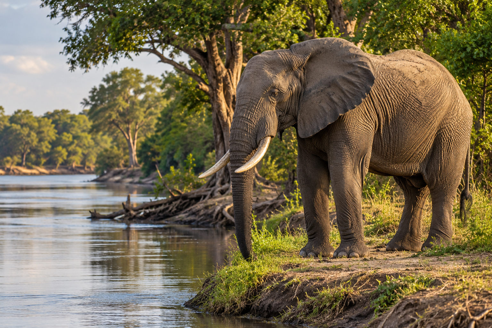
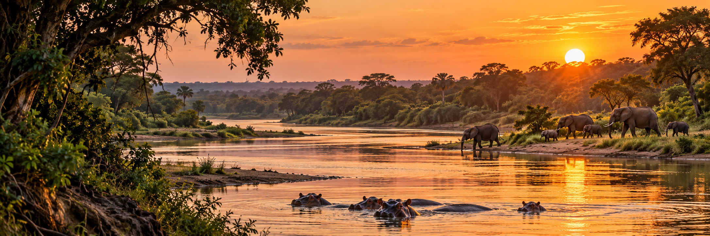
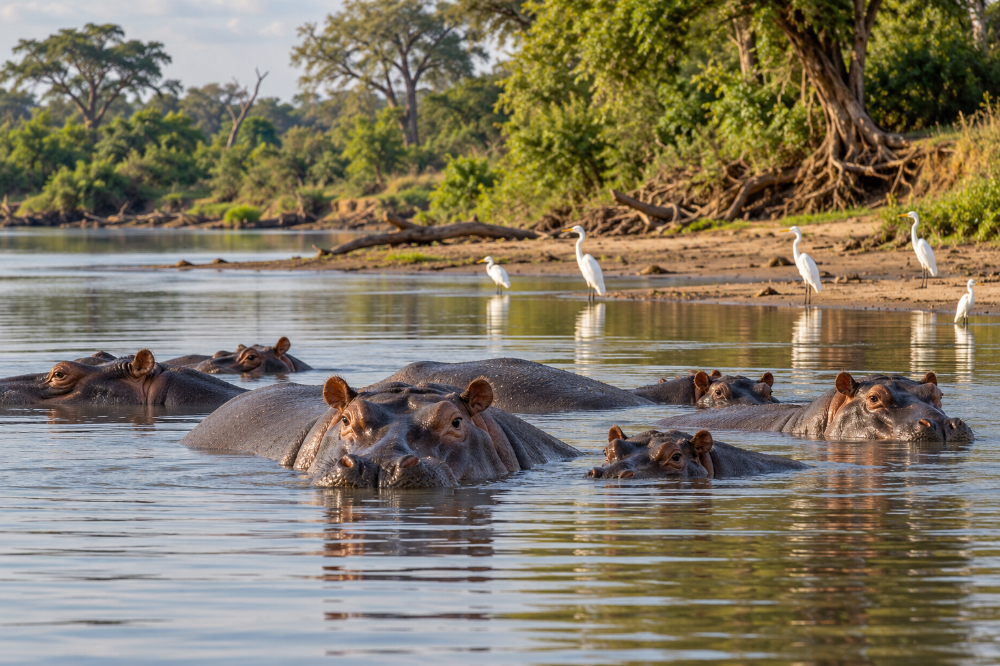
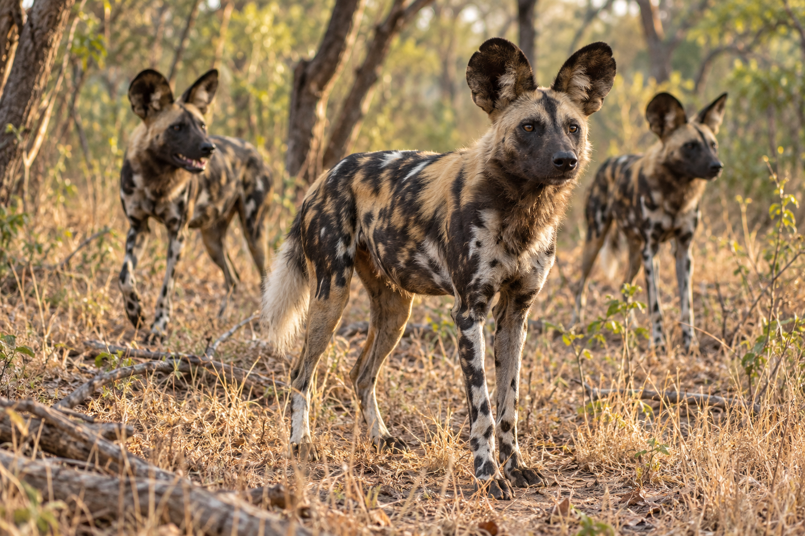

Game Drives
Explore woodland and open plains with an experienced safari guide.
Discover a vast landscape of rivers, woodlands and open plains, where safari days unfold at an unhurried pace.
Nyerere National Park protects part of the wider Selous landscape, offering a distinctive southern Tanzania safari shaped by the Rufiji River and its surrounding habitats.
Follow woodland tracks, pause by the water and discover a landscape that rewards time and curiosity. Combine game drives with river experiences where available, or pair Nyerere with other southern Tanzania destinations for a varied wilderness journey.




Look for elephants, buffalo, giraffes, lions and a rich variety of birdlife across the park's diverse habitats.
African wild dogs are among the special animals visitors hope to see. Along the waterways, hippos and crocodiles add another dimension to the safari experience.
Let your guide follow fresh signs of wildlife, take time to observe the riverbanks and enjoy the sounds of the bush. Each day brings its own opportunities; wild dog encounters and other sightings depend on natural movements and conditions.
Explore woodland and open plains with an experienced safari guide.
Discover river scenery and wildlife from the water, where available.
Experience the smaller details of the bush on a permitted guided walking safari.
Combine land and river experiences for a varied wilderness journey, tailored to your interests and pace.
Our team can arrange suitable road or air connections and lodge transfers for your chosen itinerary.
Activities and transfer options depend on your lodge, travel dates and local conditions.
A personalised itinerary built around your budget, travel dates and preferences.